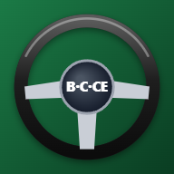

Grille de conduite
Pôle routier — Lycée professionnel du Val Moré
Ouvrir l’appli
- Android / ordinateur (Chrome) : ⋮ › Installer l’application (ou « Ajouter à l’écran d’accueil »).
- iPad / iPhone (Safari) : Partager › Sur l’écran d’accueil.
Connexion avec votre compte apps.education.fr. Accès réservé aux enseignants invités dans le document Grist.